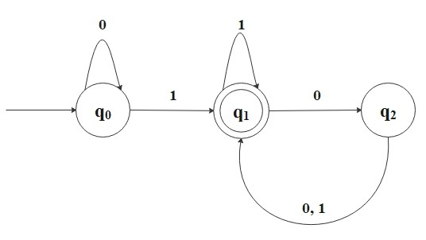
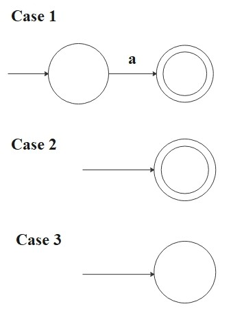
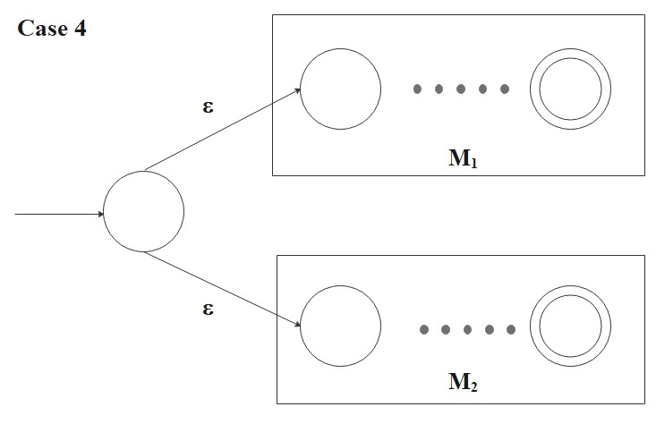
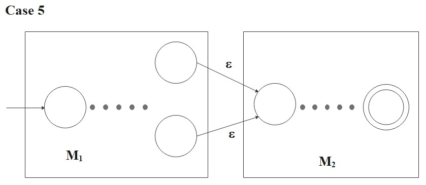
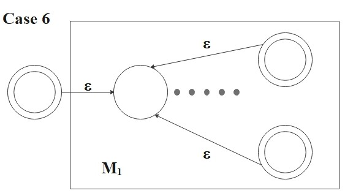
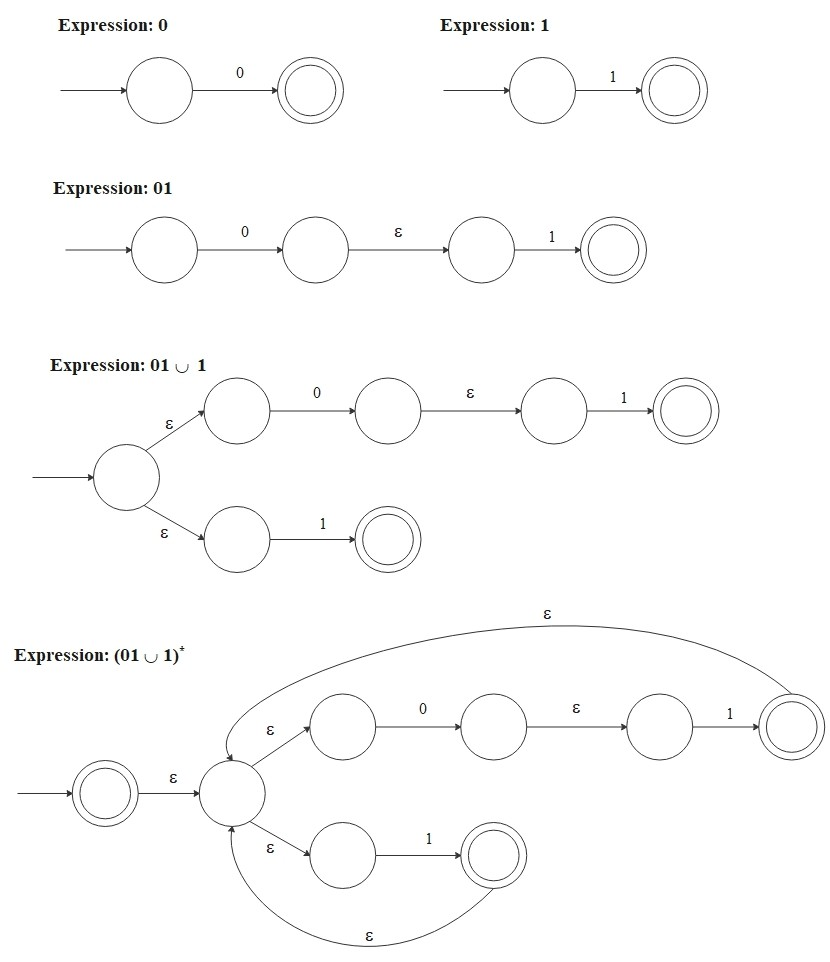

Introduction
Automata theory is a foundational area of theoretical computer science and discrete mathematics that studies abstract
machines and computational problems. It provides a rigorous framework for understanding formal languages, state-based
computation, and algorithmic processes. For instance, automata theory is essential in compiler design, natural language processing,
software verification, and the study of complexity classes in the theory of computation. By exploring automata theory, we
will develop a deeper understanding of computation, logic, and the mathematical principles governing algorithmic processes.
In this page, we introduce the simplest computational model — the finite automaton -
and the class of languages it recognizes: regular languages. We then study the regular
operations (union, concatenation, and Kleene star), the equivalence between deterministic and nondeterministic
machines, and the connection to regular expressions.
Finite Automata & Regular Languages
Real computers are enormously complex, so to study the fundamental principles of computation, we introduce
simplified computational models that isolate specific features. The simplest such model
is the finite automaton (also called a finite state machine).
Definition: Finite Automaton (DFA)
A finite automaton is a 5-tuple \((Q, \Sigma, \delta, q_0, F)\) where
- \(Q\) is a finite set called the states,
- \(\Sigma\) is a finite set called the alphabet,
- \(\delta: Q \times \Sigma \to Q\) is the transition function,
- \(q_0 \in Q\) is the start state,
- \(F \subseteq Q\) is the set of accept states.
Let \(A\) be the set of all strings that machine \(M\) accepts. We say that \(A\) is the language of
machine \(M\) and write:
\[
L(M) = A
\]
We also say that \(M\) recognizes \(A\). Moreover, a language is called a regular language if
some finite automaton recognizes it.
Consider the following finite automaton.

First, this directed multigraph is called the state diagram of the finite automaton.
It has three states, \(Q = \{q_0, q_1, q_2\}\), where \(q_0\) is the start state, and \(F = \{q_1\}\) is the
accept state which is denoted by a double circle. The arrows are transitions \(\delta\) from one state to another state.
This automaton processes an input string over the alphabet (in this case, \(\Sigma = \{0, 1\}\)) and returns either
"accept" or "reject" as output.
For example, if input string is \(1101101\), this automaton processes the string as follows:
Start reading
Read 1, move from \(q_0\) to \(q_1\)
Read 1, stay in \(q_1\)
Read 0, move to \(q_2\)
Read 1, move to \(q_1\)
Read 1, stay in \(q_1\)
Read 0, move to \(q_2\)
Read 1, move to \(q_1\)
End reading
Return "accept."
This automaton recognizes strings that end with a 1 followed by an even number of 0s. For example, "10100" is
accepted because it ends with 1 followed by two 0s, but "1011000" is rejected because it ends with three 0s after
the last 1. Note that a string ending in 1 (with zero trailing 0s) is also accepted, since zero is even.
Regular Operations
We now define three fundamental operations on languages. A key result is that regular languages are
closed under all three - applying any of these operations to regular languages always yields
another regular language.
Definition: Regular Operations
Let \(A\) and \(B\) be languages over an alphabet \(\Sigma\).
- Union:
\(A \cup B = \{x \mid x \in A \text{ or } x \in B\}\)
- Concatenation:
\(A \circ B = \{xy \mid x \in A \text{ and } y \in B\}\)
Note: \(\emptyset \circ A = \emptyset\), and \(\{\epsilon\} \circ A = A\).
Also, \(A \circ A = A^2\), and we define \(A^0 = \{\epsilon\}\).
- Kleene Star:
\(A^* = \{x_1 x_2 \cdots x_k \mid k \geq 0 \text{ and each } x_i \in A\}\)
Equivalently, \(A^* = A^0 \cup A^1 \cup A^2 \cup \cdots\).
Note: The empty string \(\epsilon\) is always in \(A^*\) (the case \(k = 0\)).
In particular, \(\emptyset^* = \{\epsilon\}\)
since \(\emptyset^* = \emptyset^0 \cup \emptyset^1 \cup \emptyset^2 \cup \cdots\).
For example, Let \(\Sigma = \{a, \, b, \, c, \, \cdots, \, x, \, y, \, z\}\).
If \(A = \{black, \, white\}\) and \(B = \{dog, \, cat\}\), then
\[
\begin{align*}
&A \cup B = \{black, \, white, \, dog, \, cat \} \\\\
&A \circ B = \{blackdog, \, blackcat, \, whitedog, \, whitecat\} \\\\
&A^* = \{\epsilon, \, black, \, white, \, blackblack, \, blackwhite, \, whiteblack, \, whitewhite, \, blackblackblack, \, blackblackwhite, \,\ \cdots\}
\end{align*}
\]
Theorem 1: Closure of Regular Languages
The class of regular languages is closed under the regular operations. That is,
if \(A\) and \(B\) are regular languages, then \(A \cup B\), \(A \circ B\),
\(A^*\), and \(B^*\) are also regular.
Proof: Closure under union
Suppose we have two finite automata
\[
M_1 = (Q_1, \Sigma, \delta_1, q_{0_1}, F_1)
\]
and
\[
M_2 = (Q_2, \Sigma, \delta_2, q_{0_2}, F_2).
\]
These can recognize regular languages \(A_1\) and \(A_2\) respectively.
Here, we can construct \(M_3\) to recognize \(A_1 \cup A_2\) as follows:
\[
M_3 = (Q_3, \Sigma, \delta_3, q_{0_3}, F_3)
\]
where
\[
Q_3 = Q_1 \times Q_2 = \{(q_1, q_2)\, | \, q_1 \in Q_1 \text{ and } q_2 \in Q_2\}
\]
\[
\delta_3((q_1, q_2), a) = (\delta_1(q_1, a), \delta_2(q_2, a)) \quad \forall a \in \Sigma
\]
\[
q_{0_3} = (q_{0_1}, q_{0_2})
\]
\[
F_3 = \{(q_1, q_2) \,| \, q_1 \in F_1 \text{ or } q_2 \in F_2 \}
\]
which is the same as \((F_1 \times Q_2) \cup (Q_1 \times F_2)\).
Note: If we say \(F_3 = F_1 \times F_2\), the resulting language is the intersection. Actually, the class of
regular languages is closed under intersection too.
Deterministic & Nondeterministic Machine
So far, we have considered deterministic computation: at each step, the current state and input
symbol uniquely determine the next state. However, what if a computation is allowed multiple choices for the
next state? Such a computation is called nondeterministic. Every deterministic finite automaton
(DFA) is trivially a nondeterministic finite automaton (NFA), since determinism
is a special case of nondeterminism.
Definition: Nondeterministic Finite Automaton (NFA)
A nondeterministic finite automaton is a 5-tuple \((Q, \Sigma, \delta, q_0, F)\) where
- \(Q\) is a finite set of states,
- \(\Sigma\) is a finite alphabet,
- \(\delta: Q \times \Sigma_{\epsilon} \to \mathcal{P}(Q)\) is the transition function,
- \(q_0 \in Q\) is the start state,
- \(F \subseteq Q\) is the set of accept states,
where \(\Sigma_{\epsilon} = \Sigma \cup \{\epsilon\}\) and \(\mathcal{P}(Q)\) is the power set of \(Q\).
Note: The power set of a set is the set of all possible subsets of that set, including the empty set and the set itself. For example,
if \(Q = \{a, b, c\}\), then \(\mathcal{P}(Q) = \{\emptyset, \{a\}, \{b\}, \{c\}, \{a, b\}, \{a, c\}, \{b, c\}, \{a, b, c\}\} \). So, if
a set has \(n\) elements, its power set has \(2^n\) elements.
At each state, the NFA can split itself into multiple branches and keeps following all the possible branches in parallel.
In other words, the NFA can have multiple active states at once, while the DFA always has a single active state.
If at least one of these branches reaches an accept state, then the whole computation accepts.
Note: The NFA sounds like parallel computation, but in "actual" parallel computation, multiple processors or threads execute
tasks concurrently, often with considerations for synchronization, communication, and resource sharing. NFAs don't model
these practical concerns.
Theorem 2: NFA-DFA Equivalence
Every NFA has an equivalent DFA. That is, for every NFA \(N\), there exists a DFA \(D\)
such that \(L(N) = L(D)\).
Importantly, this theorem says that NFAs and DFAs recognize the same class of languages - the
regular languages. However, an NFA is often much smaller and easier to design than its equivalent DFA. The
conversion (known as the power set construction or subset construction) can
produce a DFA with up to \(2^{|Q|}\) states, so the two models are not equivalent in terms of succinctness.
We now introduce a third way to describe regular languages - through algebraic expressions rather than machines.
Regular Expressions
Definition: Regular Expression
\(R\) is a regular expression over the alphabet \(\Sigma\) if \(R\) is one of the following:
- \(a\) for some \(a \in \Sigma\) (the language \(\{a\}\)),
- \(\epsilon\) (the language \(\{\epsilon\}\) containing only the empty string),
- \(\emptyset\) (the empty language, containing no strings),
- \((R_1 \cup R_2)\), where \(R_1\) and \(R_2\) are regular expressions,
- \((R_1 \circ R_2)\), where \(R_1\) and \(R_2\) are regular expressions,
- \((R_1^*)\), where \(R_1\) is a regular expression.
This is an inductive definition: cases 4-6 build larger expressions from smaller ones.
A language that can be described by a regular expression is precisely a language recognizable by a
finite automaton — this is the reason such languages are called regular.
To distinguish a regular expression \(R\) from the language it describes, we write \(L(R)\) for
the language of \(R\).
Theorem 3: Equivalence of Regular Expressions and Finite Automata
A language is regular if and only if some regular expression describes it. That is:
- If a language is described by a regular expression, then it is regular.
- If a language is regular, then it is described by a regular expression.
Proof: Part 1
For each case in the definition, we want to convert regular expression \(R\) into NFA \(M\) recognizing some
language because we know that if an NFA recognizes the language, then it is regular.
- \(R = a\) for some \(a \in \Sigma\):
Then
\[
L(R) = \{a\}
\]
and the following NFA recognizes \(L(R)\):
\[
M = (\{q_0 , q_1\}, \Sigma, \delta, q_0, \{q_1\})
\]
where \(\delta(q_0, a) = \{q_1\}\) and \(\delta(r, b) = \emptyset\) for \(r \neq q_0\) or \(b \neq a\).
- \(R =\epsilon\):
Then
\[
L(R) = \{\epsilon\}
\]
and the following NFA recognizes \(L(R)\):
\[
M = (\{q_0\}, \Sigma, \delta, q_0, \{q_0\})
\]
where \(\delta(r, b) = \emptyset\) for any \(r\) and \(b\).
- \(R = \emptyset\):
Then
\[
L(R) = \emptyset
\]
and the following NFA recognizes \(L(R)\):
\[
M = (\{q\}, \Sigma, \delta, q, \emptyset)
\]
where \(\delta(r, b) = \emptyset\) for any \(r\) and \(b\).

For cases 4, 5, and 6, let \(M_1 = (Q_1, \Sigma, \delta_1, q_{0_1}, F_1)\) be an NFA that recognizes \(L(R_1)\) and
\(M_2 = (Q_2, \Sigma, \delta_2, q_{0_2}, F_2)\) be an NFA that recognizes \(L(R_2)\). We assume that the state sets
\(Q_1\) and \(Q_2\) are disjoint.
- \(R = (R_1 \cup R_2)\):
Then
\[
L(R) = (R_1 \cup R_2)
\]
and the following NFA recognizes \(L(R)\):
\[
M = ( Q_1 \cup Q_2 \cup \{q_0\}, \Sigma, \delta, q_0, F_1 \cup F_2)
\]
where for any \(q \in Q\) and any \(a \in \Sigma_{\epsilon}\),
\[
\delta(q, a) = \begin{cases}
\delta_1(q, a) &\text{if \(q \in Q_1\)}, \\
\delta_2(q, a) &\text{if \(q \in Q_2\)}, \\
\{q_{0_1}, q_{0_2}\} &\text{if \(q = q_0\) and \(a = \epsilon\)}, \\
\emptyset &\text{if \(q = q_0\) and \(a \neq \epsilon\)}. \\
\end{cases}
\]

- \(R = (R_1 \circ R_2)\):
Then
\[
L(R) = (R_1 \circ R_2)
\]
and the following NFA recognizes \(L(R)\):
\[
M = ( Q_1 \cup Q_2 , \Sigma, \delta, q_{0_1}, F_2)
\]
where for any \(q \in Q\) and any \(a \in \Sigma_{\epsilon}\),
\[
\delta(q, a) = \begin{cases}
\delta_1(q, a) &\text{if \(q \in Q_1\) and \(q \not\in F_1\) }, \\
\delta_1(q, a) &\text{if \(q \in F_1\) and \(a \neq \epsilon\) }, \\
\delta_1(q, a) \cup \{q_{0_2}\} &\text{if \(q \in F_1\) and \(a = \epsilon\) } \\
\delta_2(q, a) &\text{if \(q \in Q_2\) }. \\
\end{cases}
\]

- \(R = (R_1^*) \):
Then
\[
L(R) = (R_1^*)
\]
and the following NFA recognizes \(L(R)\):
\[
M = ( Q_1 \cup \{q_0\}, \Sigma, \delta, q_0, \{q_0\} \cup F_1)
\]
where for any \(q \in Q\) and any \(a \in \Sigma_{\epsilon}\),
\[
\delta(q, a) = \begin{cases}
\delta_1(q, a) &\text{if \(q \in Q_1\) and \(q \not\in F_1\) } \\
\delta_1(q, a) &\text{if \(q \in F_1\) and \(a \neq \epsilon\) }, \\
\delta_1(q, a) \cup \{q_{0_1}\} &\text{if \(q \in F_1\) and \(a = \epsilon\) }, \\
\{q_{0_1}\} &\text{if \(q = q_0\) and \(a = \epsilon\) }, \\
\emptyset &\text{if \(q=q_0\) and \(a \neq \epsilon\)}. \\
\end{cases}
\]

As an example, we convert the regular expression \((01 \cup 1)^*\) into an NFA through a sequence of stages. This expression
generates strings such as
\[
\{\epsilon, \, 01, \, 1, \, 0101, \, 11, \, 1101, \, 01011101, \, 11111, \, 01101011110111, \, \cdots\}
\]
and the following NFA recognizes these strings. When the NFA follows an \(\epsilon\)-transition, it moves to the next state
without reading the next symbol from the input string.
